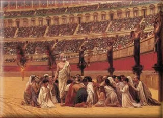

Out of office, but still in play: The modern Torture State is Dick Cheney's legacy.
Shall I tell you what true evil is? It is to submit to you. It is when we surrender our freedom, our dignity, instead of defying you. --
Captain Jean-Luc Picard confronts Armus, Dick Cheney's sci-fi soulmate.
En route to the Enterprise-D, a shuttlecraft carrying Counselor Deanna Troi malfunctioned and crash-landed on desolate Vagra II. The accident killed the nondescript shuttle pilot (who, appropriately enough, was clad in the often-fatal red uniform) and left Troi seriously injured. Her misfortune was complicated by the presence of a malevolent entity known as Armus -- the congealed essence of sadistic evil.
Abandoned on Vagra II by a long-extinct race, Armus could re-arrange itself into a vaguely humanoid form. It could generate potent force fields and direct lethal energy discharges at anyone who provoked its displeasure. In appearance and substance, Armus somewhat resembled the Venom symbiote that afflicted Spider-Man (I write those words knowing that I am revealing myself to be an incurable sci-fi nerd).
Armus, in humanoid form.
.jpg){kind=link}
Following its abandonment countless millennia ago, Armus degenerated into a being of pure rage and hatred. Troi and her Enterprise colleagues were the first to interrupt Armus's prolonged exile, and he greeted his unexpected visitors in predictable fashion -- by torturing them.
It's tempting to think that Armus was a sci-fi analogue to Dick Cheney -- a being formed from congealed malevolence whose only pleasure is taken from confining and tormenting other beings. Cheney's background in the petroleum industry offers supplies another point of metaphorical contact, given that Armus in repose looked like an oil slick.
Nevertheless, the parallel doesn't quite work. Armus describes himself as a "skin of evil left here by a race of Titans who believed if they rid themselves of me, they would free the bonds of destructiveness."
That race somehow devised a way "of bringing to the surface all that was evil and negative within, erupting, spreading, connecting. In time, it formed a second skin, dank and vile."
Creature from the Id: The valiant crew of Starship C-57D directs withering neutron-beam fire at a foe at once invisible and invincible in the classic film Forbidden Planet.They would learn later that the apparition embodied Goya's dictum that the sleep of reason produces monsters. A better view of that cute little critter can be found below.

At the risk of conferring undue legitimacy on Freud's dogma, it may be best to describe Cheney as the Id of modern conservatism.
He isn't the wretched residue cast off by the Red State Fascist sub-population; he is its depraved living essence, and his malignant influence pulsates through the executive branch even though a new administration is nominally in charge.
The routine criminal violence carried out in the name of "the war on terror" -- summary execution of terrorist suspects by way of Langley's death drones, the murder of handcuffed Afghan children by Washington's death squads, as well as the institutionalization of unaccountable, dictatorial presidential war powers, and the creation of spurious legal doctrines denying personhood to prisoners accused of being "enemy combatants" -- are fulfillment of Cheney's decree that the U.S. government would take a turn to the "dark side" that would probably last for decades.

Operatives of Russia's "security organs" could be called "Dzerzhinsky's Children" in memory of Feliks Dzerzhinsky, the career criminal who founded the Cheka secret police.

In similar fashion it could be said that those now enrolled in Washington's apparatus of surveillance, detention, torture and murder are products of Cheney's vision. They are creatures from the Id of contemporary conservatism, in which nothing is considered more important than preserving and enhancing Leviathan's power to imprison, torture, and kill anyone designated an enemy of the State.
Torture produces little if any reliable intelligence. It is entirely unconstitutional and banned by both domestic law and international agreements. It is, however, a superb method to dehumanize individuals and force them to submit to whatever their captor demands.
More importantly, from the perspective of Cheney's disciples, torture serves something of a sacramental function. The ritualized torment of those deemed to be irreconcilably alien ("they're not citizens or even common criminals -- they're terrorists!") is critical to establishing a sense of shared identity, a tangible way of distinguishing "them" from "us."
Cognate public sentiments played a role in establishing the Soviet and Nazi secret police organs, which defined themselves-- lest we forget -- as enforcement bodies carrying out "counter-terrorism" missions. One measure of what we might call the Cheneyification of public opinion was offered by the GOP-friendly Rasmussen polling firm immediately after the most recent piece of "security theater" -- the abortive Christmas Day bombing of Northwest Flight 253.
According to Rasmussen's New Year's Eve survey, 58% of the public agreed with the proposition that Umar Farouk Abdulmutallab, aka the "Panty-bomber Patsy," should be tortured, because ... well, because he's a Muslim accused of terrorism, that's why, and thus shouldn't be "given the rights" that would protect American criminal defendants.
Interestingly, an April 2009 poll conducted by the same firm claimed that the public, by exactly the same margin, opposed investigation of Bush-era torture practices. This makes me wonder if the firm is tweaking the results going back to the same demographic well.
Just a few years ago, points out Matthew Yglesias, torture was being justified as an exceptional means used to pry critical intelligence out of recalcitrant master terrorists -- an emergency measure that played out against the pressure of a ticking time bomb.
By now, however, torture is firmly institutionalized as a routine interrogation-cum-punishment technique. For the post-Cheney GOP, noted Adam Serwer of The American Prospect, “torture is no longer a `necessary evil.’ It is a rally cry, a `values’ issue like same-sex marriage or abortion. They don’t “grudgingly” support torture, they applaud it. They celebrate it."
In fact, as I've noted elsewhere, the GOP's "values" commissariat is willing to countenance all kinds of political and theological transgressions on the part of a candidate as long as he or she firmly supports torture. This is what remains of conservatism today: Fetid nihilism shrouded in high-gloss sanctimony.
The truly nihilistic nature of the torture regime constructed under Bush and Cheney is displayed in the case of Fouad al-Rabiah, an innocent Kuwaiti father of four who was captured, detained, and tortured by the Washington regime for years despite the fact that he was known to be innocent.
In the case of al-Rabiah, notes Andy Worthington, author of “The Guantanamo Files,” the Bush-Cheney regime “tortured an innocent man to extract false confessions and then threatened him until he obligingly repeated those lies as though they were the truth.”
Al-Rabiah filed a habeas corpus petition in May 2002; his was the oldest habeas petition of those filed on behalf of Gitmo detainees. It was granted by U.S. District Judge Kathleen Kollar-Kotelly on September 17 (Constitution Day, for what that’s worth), who pointed out that the “evidentiary record” against al-Rabiah consisted entirely of statements extracted from him by torture.
“The Government’s simple explanation for the evidence in this case is that Al Rabiah made confessions the Court should accept as true,” noted Judge Kollar-Kotelly. “The simple response is that the Court does not accept confessions that even the Government’s own interrogators do not believe.”
The most chilling passages of Judge Kollar-Kotelly's highly redacted ruling recount the words spoken to him as his torture ordeal began:
"[A] senior [redacted] interrogator came to me and said: `There is nothing against you. But there is no innocent person here. So, you should confess to something so you can be charged and sentenced and serve your sentence and then go back to your family and country, because you will not leave this place innocent." [Emphasis added].
In August 2004, just before a military commission reviewed al-Rabiah's case, "my interrogators told me the [hearing] was just a show that would allow the United States to `save face,'" he recalled in an account that was corroborated to Judge Kollar-Kotelly's satisfaction. "My interrogators told me no one leaves Guantanamo innocent, and told me I would be sent home to Kuwait if I `admitted' to some of the false things I had said in my interrogations. The interrogators also told me that I would never go home if I denied these things, because the United States government would never admit I had been wrongly held."
This underscores a critical aspect of the practice of torture: It is a means of validating the assumption that those who wield power on behalf of the State are always right -- indeed, that terms such as "right" and "wrong," "good" and "evil" have no independent meaning beyond that assigned by the State in the interests of those who control it. Torture is a form of punishment, which means that those selected by the State to undergo it are guilty of something -- it matters not what it is.
Compounding al-Rabiah's torment was the prospect of "rendition" to another country in which torture is practiced without stint or pretense by secret police agencies trained by the CIA -- and often cross-trained by the KGB. in fact, the CIA has taken over the KGB's lease on many of the "black sites" in which such atrocities have been committed.
One of the most popular destinations for victims of "extraordinary rendition" is Uzbekistan, a pocket of Stalin-grade Communism in Central Asia ruled by Islam Karimov, a Soviet-trained dictator of the old school.

Former British Ambassador to Tashkent Craig Murray lost his job and has endured severe vituperation at the hands of his government because he objected to Britain's collaboration in CIA-sponsored torture conducted in Uzbekistan.
"If you are put into prison in Uzbekistan the chances of coming out again alive are less than even," writes Murray. "And most of the prisons are still the old Soviet gulags in the most literal sense."
Within a few weeks of being posted to the country, Murray attended a show trial of an elderly man who had been tortured into confessing involvement with al-Qaeda and implicating his nephew as well. This Stalinist spectacle, recalls Ambassador Murray, was "put on partly for the benefit of the American embassy to demonstrate the strength of the U.S.-Uzbek alliance against terrorism."
Unfortunately for the American commissars and their local clients, the elderly defendant refused to play his scripted role. Gathering strength from somewhere "he said, `This is not true. This is not true. They tortured my children in front of me until I signed this. I had never heard of al-Qaeda of Osama bin Laden.'"
This elderly Uzbek was taken out and murdered for his defiance, but in telling the truth he reclaimed his humanity. He died as a man, something Cheney and his ilk will never understand. He was but one of thousands who have been tortured during the past decade by Uzbek chekists, many of them on the specific instructions of Washington. In that case and others, Murray recalls, Uzbeks made use of a torture method specifically endorsed by the execrable John Yoo: Torturing children in order to compel the parents to submit.
Yoo, the impenitent war criminal who wrote many of the key torture memos for the Bush regime, claims that the president has the authority to order the sexual mutilation of a child if he considers such action necessary.
According to Murray, the Uzbek regime apparently got a copy of the relevant memo: "Mutilation of the genitals was common. Suffocation was common, usually by putting a gas mask on people and blocking the air vents until they suffocated. Rape was common, rape with objects, rape with bottles, anal rape, homosexual rape, heterosexual rape, and mutilation of children in front of their parents."
Ninety percent of all "rendition" flights that visited the former KGB prison in Poland used as a CIA torture facility "went straight on to Tashkent," Murray observes. "There was an overwhelming body of evidence that ... people from all over the world were being taken by the CIA to Uzbekistan specifically in order to be tortured."
Sometimes words simply fail me: The remains of Muzafar Avazov, who was boiled alive by the CIA's noble Uzbek allies.

The CIA's Uzbek subcontractors occasionally grew tired of commonplace abuse and occasionally boiled a victim alive. Murray recalls the case of Muzafar Avazov, who was submerged in a boiling liquid after his fingernails had been pulled from his hands.
This case was neither unique nor uncommon. Murray had no trouble compiling a large and detailed dossier on the routine, systematic torture being carried out with the blessing of his government and the Washington-based empire that holds its leash.
When Murray expressed his concerns to his superiors, he was chastised for being "over-focused on human rights." When he dispatched a deputy to confront the CIA's station chief with his concerns, Murray's associate was told that the "intelligence" being gathered by the Agency was indeed produced through torture, "but we don't see that as a problem in the context of the war on terror."
Give Karimov and his junta credit for being bold and candid in embracing this evil. The American torture state operates on exactly the same totalitarian premises, but tries to disguise this reality beneath a thick lacquer of supposed righteousness.
A certain part of the public (one heavily seasoned by people professing to worship as God the Lonely Nazarene who was gratuitously scourged and beaten by valiant troops who served a previous empire) simply expects that anyone accused of terrorism, not just those caught in the act, will be treated as if his guilt is an established fact and tortured as a matter of course.


It is strikingly perverse that contemporary Christians -- people who claim to follow the same faith as the early believers, many of whom were well-acquainted with the dim solitude the dungeon and the sting of the torturer's whip -- embrace this profane cult.
The early Christians were willing to face death by torture rather than offer a pinch of incense on the altar of a ruler who supposedly embodied the State's divinity.
Too many Americans who profess to be believers are more akin to the dissolute Romans who occupied the best seats in the Coliseum while Christians and other enemies of the State were dismembered for their political heresies -- or the Uzbek officials who fill prisons with Christians and other innocents, and occasionally boil people alive.
Setting aside Freud's analysis of the inner life, we should recall that we're informed, on the best Authority, that "from the abundance of the heart the mouth speaketh." (Luke 6:45) What, then, can we infer from the willingness of conservative American Christians to countenance, and even applaud, torture?
 Be sure to listen to Pro Libertate Radio each weeknight from 6:00-7:00 PM Mountain Time on the Liberty News Radio Network.
Be sure to listen to Pro Libertate Radio each weeknight from 6:00-7:00 PM Mountain Time on the Liberty News Radio Network.Dum spiro, pugno!
37 comments:
Some people exist only to prove the existence of Hell.
-Sans Authoritas
"En route to the Enterprise-D, a shuttlecraft carrying Counselor Deanna Troi malfunctioned and crash-landed on desolate Vagra II. The accident killed the nondescript shuttle pilot (who, appropriately enough, was clad in the often-fatal red uniform) and left Troi seriously injured. Her misfortune was complicated by the presence of a malevolent entity known as Armus -- the congealed essence of sadistic evil."
Actually, the redshirt pilot survived. I remember they beamed him out of the shuttle to sickbay alive. It's kind of ironic, considering one of the main characters does die. Shuttle piloting was a relatively safe occupation in Star Trek. The only episodes I can think of where the shuttle pilots died were DS9's "The Ship" (they were killed when the Jem'Hadar battle cruiser shot the shuttle down) and VOY's "Unity" (she was shot by the ex-Borg).
"(I write those words knowing that I am revealing myself to be an incurable sci-fi nerd)."
I think I'm probably much worse.
"What, then, can we infer from the willingness of conservative American Christians to countenance, and even applaud, torture?"
As an atheist who firmly believes in the non-aggression principle, I have found myself asking this very question so many times.
Over time I find that for the most part, not all mind you, the majority of those who claim to be believer's are nothing but hypocrites for whom the claim of belief is a thin moral veneer to disguise the worst of humanity.
Much the same as gov't they believe they can wrap any evil in the right words to give legitimacy to any atrocious act.
And it is not just 'those people' who are being terrorized by this mindset, there's plenty here for us in the 'Homeland' [ptui, only an f'n nazi could have come up with, or use, that phrase].
In Male Fide
Sic Semper Tyrannis
Mr. Grigg,
Thank you. I have said much the same about Dick Cheney (and also George W. Bush and Karl Rove, his companions in evil.) Thank you too for recognizing the evil of the so-called Christian conservatives. People always create their God in their own image - if they are loving people, they worship a loving God, if they are hateful people, they worship a hateful God. So it has always been, down through the centuries. This was a fine essay and a daring position to hold. Let's see if your readers can accept it or not.
Good word Sans Authoritas.
Mr. Grigg, another excellent post, by excellent of course I refer to your reasoning and writing not the subject of course. This has been an issue for me of not a little frustration in talking with fellow Christians. Nothing bothers me more than how most evangelicals have become nothing more than lap dogs to the republican party and have now come to endorsing torture.
Whatever happened to the church setting the curve for culture rather than just being a lackey to everything?
The investiture of situation ethics with authority by modern American "Christianity" is perhaps the greatest tragedy of our time. Public education, with its "life raft" exercises, exacerbates the problem, so that we have people trained all their life to live and think as utilitarian pragmatists occupying pulpits, claiming to preach the word of God, but spouting their "I'm for what works" mantras, preparing their flock to fall for the "ticking bomb" scenario. After they've decided that torture is OK in the "ticking bomb" scenario, they can be persuaded that waterboarding is OK, because it's not really torture to cause someone to drown while taking care to ensure they do not die from it. From there, it's a short step to approving torture in general (especially with properly cultivated convictions that *our* government can do no wrong).
i swear when i saw that photo of the boiled guy, i wanted to puke. i wonder what other photos are out there?
and to think, someone was probably proud of this photo. i mean, no criminal with a conscience would take an incriminating photo of his handiwork.
and it's amazing that the justice department is not prosecuting anyone over this. but this is politics. and i bet they think God is ok with this.
break
san autoritas,
i think some people exist only to fill Hell.
rick
Now that you've confessed to being a sci-fi nerd, I have to ask: have you ever seen a movie called "Serenity"? It is probably the most pro-individual and anti-state movie I've ever seen. It is beautifully done and never strikes a false note. I don't know how in the hell it ever got made in Hollywood.
RP-in-TX:
At the suggestion of a good friend, I've decided that if we're ever blessed with another son, I want to name him Mal.
I am the proud owner of a long, brown coat.
On occasion, when one of the Grigglings misbehaves, I issue a warning that the child is "beginning to damage my calm."
I conjure that this should answer your first question. :-)
As to how that film got made -- I have no gorram idea. (I know -- enough already!)
We just re-watched "Serenity" a few days ago, and the theme of creating a "world without sin" through totalitarian "meddling" was what prompted the outburst above.
Awesome! There is one quote from River in the first scene that I think should be tattooed to the forehead of every politician, and that sums up my thoughts on politics and life.
"People don't like to be meddled with."
Th[e] elderly Uzbek was taken out and murdered for his defiance, but in telling the truth he reclaimed his humanity. He died as a man, something Cheney and his ilk will never understand.
Let this poor MUSLIM man's story be an example, to be rubbed into the noses of every Amoricon so-called "Christian", of the firmness of faith exhibited by the earliest (a cynic might argue LAST REAL) Christians. Those true believers, eschewing earthly riches and temporal power for the only type of either that counts, faced the same type of lethal persecution for their beliefs as did this elderly Muslim. I have no reason to believe that this elderly Uzbek man's strength and courage of conviction are unique. And while there is no way of knowing how devout a practitioner of his faith he was, it seems that he, like many devout Muslims and Christians in the developing world today, for whatever motivations their faiths provide, was willing to make the same ultimate sacrifice for his faith that was the inevitable outcome of the earliest Christian believers' existence.
In today's Amerika, however, just as was the case in Europe for a millenium, "Christians" enjoy privileged status as members of the de facto official state religion, one that ever since the Roman Emperor Constantine co-opted the church through his sham "conversion" to Christianity in the early Fourth Century has borne not the slightest resemblance to the faith that sprang from Christ and his original disciples. Most "Christians" in both Amerika and the Western world in general are members of the privileged state-sanctioned church, the "national religion", and as such they face none of the trials or tribulations, no "punishment" for professing their beliefs that both the Gospels and the letters of the Apostle Paul promised would be the daily experience of every true Christ follower - at least as long as they adhere to the state-approved version of the church. However, let any citizen of the United Fascialist State of Amerika openly practice his faith in the manner of a First Century believer, to include publicly speaking out and fighting against the tyranny and violence practiced by the Amerikan State and endorsed by the members of the National Church, and that person will share the fate of a Dietrich Bonhoeffer, Watchman Nee, and countless thousands of other believers who dared defy the secular regimes under which they lived or those regimes' "official" versions of the Christian church.
"Evangelical Christians" are fond of envisioning an apocalyptic world in which "Christians" are persecuted for their faith. True Christ followers will very likely indeed be so persecuted - at the hands of "Evangelical Christians" in thrall to the Leviathan State and its satanic violence.
faithfulandcredit-
That's exactly it. I went to a Christian university the last 2 years in getting my BA (mainly to study Greek and Hebrew, not bc I have some sort of keep away from unbelievers attitude) and my philosophy of ethics professor was thoroughly Kantian. I rejected all this rubish and asked why we can't just base our ethics on the principals of scripture?
At anyrate needless to say he and I didn't get along very well. The top issue was torture, where he gave the Jack Bauer utilitarian argument to justify torture, I called him out on his leap into utilitarian ethics and he simply had no response.
Now I bring this up because he is a professor allegedly equiping people with a robust template to make ethical judgements. I did my final paper on torture leaning heavily on the John Yoo memos, and incidents from Guantanomo and other torture sites to show that indeed it was torture, further I showed that in the past we prosecuted the Japenese for waterboarding calling it torture.
The amazing this is it had no effect whatsoever...he still said that there was no torture going on (hiding behind the semantical defense of enhanced interrogation) and further justifying it to get information because the bomb is ticking. Again, this man is supposed to be giving people a Christian worldview.
When one sees American Christians speaking in favor of infinite detainments and torture, that could be explained as the flesh talking. It is sickening, sinful and un-Christlike. I have seen firsthand, christian pastors speak in one sentence of the love of God and holy living and then the next one promoting torture. It's very close to blasphemy.
...and further justifying it to get information because the bomb is ticking...
I've heard that same argument from friends and family, and I've got a very simple counter-argument.
Keep torture illegal with harsh penalties for those who use it. In the case of an actual ticking bomb, someone who uses torture to stop it will have ample opportunity to explain the matter to twelve peers. In law this is called a "positive defense".
Here's an analogy. It is illegal to shoot and kill someone. However, if the person you shot was breaking into your house in the middle of the night and is armed, you have a positive defense against homicide.
This is the way such matters have been handled under English common law and American Constitutional Law for centuries. The reason government officials argue for legalizing torture now is not to prevent prosecution in "ticking bomb" scenarios (though that is what they claim).
Instead, it is so that torture can be considered a matter of policy. If they can make a legal justification to waterboard Khalid Sheikh Mohammed, they can also justify waterboarding me and my family.
Oil men drill it deeper.
http://news.yahoo.com/s/ap/20100108/ap_on_bi_ge/us_airport_security_the_future/
Mind-reading systems could change air security
A careful reading of this will show just who is pushing for all this.
The truth = Hate you know.
Orwell was a Pollyanna.
Very good points raised once again. RP-in-TX made the case I've laid out before friends (in Texas no less), and some are quite staunch church going folk, that if they give such evil authority to their "friends" in high places then they shouldn't squawk like stuck pigs when their enemies use those same powers upon them! They bob their heads, give me a weary chuckle, and acknowledge that I'm right. Months on down the road its like the conversation never happened and they're back in the old rut repeating the same old lies to me. The constant in this are that they dutifully attend churches that chant the God and Country mantra, as so many sadly do, and hang about folks from church that are conditioned to believe the same thing. The old addage of birds of a feather flock together couldn't be more true. Not to say that there are those of an opposite spectrum of belief who don't likewise do the same because they too beat their ideological drums in the same "religious" fervor without calling it as such, but they don't fool me.
Trek side thoughts.... The old joke used to be that if you wanted to die you just wore a red shirt while beaming down with the central characters. Death, imminent!
Question: Did security and engineering ever swap shirt colors? Just a geekish thought.
Liberanter, you struck the nail on the proverbial head. Just like tares amongst the wheat you have people thinking that by killing you they're doing God a favor. All with a straight face no less!
I had a Skype session with a friend down in Austin and we discussed churches and how they've become beholden to the State and willingly corrupted in order to supposedly "do business" within our borders. This is an obscenity! The church should drop their tax status "waltz with the devil" once and for all and mount the offensive that was called for from the beginning. Then and only then will the true face of our leadership come out and you can fully expect the long knives of the State to be drawn. This is what they, politicians and pension seeking church "leaders", fear. So it comes as no surprise they innoculate the sheep from the truth so as to keep "order".
That photograph of the boiled man is one of the single most chilling things I’ve ever seen. God help us because there is going to be hell to pay for all these lives.
I just returned from a church conference where I was once again horrified at the political stupidity of the young people within the church. But I was glad that the main speaker had his head screwed on the right way, and wasn’t afraid to call the lesser of two evils what it really is: evil. God grant us more pastors like him!
Soli Deo Gloria
If Cheney is analogous to Armus, would Pelosi be analogous to Stargate Atlantis' Wraith?
Liberranter says..."True Christ followers will very likely indeed be so persecuted - at the hands of "Evangelical Christians" in thrall to the Leviathan State and its satanic violence."
And it is already happenning..see what happened to Pastor Greg Boyd in MN who dared to criticize the warfare state, I think he lost close to half of his congregation.
I would like to see more people like him really take on the idolatry of the supposedly benelovent welfare/warfare state and american exceptionalism.
Grigg's Analysis Incomplete--Is There Perfectly "Free" Human Will?
(Apollonian, 13 Jan 10)
Sorry to throw a wrench into this putrid out-pouring of commendation for Will Grigg's blatherings on easy subject of torture--but I have some un-welcome, I'm sure, questions for u all.
Does Grigg pretend to assert presumptuous existence of "good-evil" fallacy/delusion/heresy (Pelagianism, denounced by St. Augustine and Martin Luther)?--I think he does.
So then what's premise for this otherwise presumptuous "good-evil"? Do the Pharisees here on this blog further assert the perfectly "free," hence God-like, human will?
For doesn't human reason necessitate the DETERMINED universe in accord w. absolute cause-effect?--hence then disallowing for a perfectly "free" human will?
Thus if one seriously believes in such "good-evil" and perfectly "free" human will, it surely seems possible to contrive to excuse the "good" purpose for torture--by which torture alleged "information" is manufactured for excuse to initiate Iraq war, for example, in which now over a million people have been killed.
CONCLUSION: I submit then Grigg's analysis is incomplete and even illogical, regarding torture, if he first asserts such "good-evil" presumption and implicit perfectly "free," God-like, hence hubristic human will. So Grigg, "ball" is in ur court: are u going to tell us now u simply have "faith" in the perfectly free human will? Honest elections and death to the Fed. Apollonian
This post has been up for a while, so it might be a bit stale. I doubt, however, that putrefaction has set in already.
As I understand Pelagianism, that heresy doesn't have any necessary relevance in a discussion of torture as an objectively evil act, irrespective of the identity of the person committing it.
If I understand you correctly, you are suggesting that belief in the existence of objective good and evil is a species of heresy. If that's the case, mark me down as a heretic in the company of such disreputable people as the prophet Isaiah (vide Is. 5:20). Your letter correctly denounces the needless death of a million people in Iraq, and the Federal Reserve's counterfeiting and fraud, as moral evils, so I suppose we're all part of the same coven of heretics.
My view is that one of the inescapable restraints on human liberty is the inability to configure morality to our will. Just as I'm not at liberty to ignore the law of gravity or to define a triangle as an object with four sides, I'm not at liberty to take another's property by force or otherwise commit aggression against him. Freedom depends on the recognition of such moral absolutes. Torture is usually defended through selective and self-serving application of situational ethics (which, by definition, is always selective and self-serving, I suppose).
My understanding (based on admittedly inadequate study of primary sources) is that both Augustine and Luther rejected Pelagius's assumption that mankind is untainted by Original Sin, recognizing instead that all of us are sinful and thus incapable of doing good absent divine aid (i.e. the indwelling of the Holy Spirit). That, for what it's worth, is my view as well, and it helps explain why my political views are rooted in a thoroughgoing repudiation of the idea that any of us is capable of exercising God-like powers over others.
"Torture Mere Consequence Of Prior Problems: Presumption/Fallacies Of "Good-Evil," "Free" Will
(Apollonian, 13 Jan 10)
Thanks for ur response, but u merely assert an impossibility--unless u can give substantiation-premise. For there is no such thing as "objective good" (or "evil")--if there is, then pls give us the criterion--there is none; that's why u don't bother giving it in ur response, merely invoking Isaiah (backing an assertion merely w. another assertion/authority).
A million murdered people in Iraq by ZOG-Mammon empire-of-lies is bad for interests of US citizens--so it doesn't have to be "objective"--and I don't pretend it is. Israelis will no doubt earnestly assert a million dead Iraqis is less potential soldiers against them, thus "good" for them.
But otherwise, can't u see the absurdity of ur response regarding "good"?--that is exactly, precisely what the Israelis or Cheney would (and do) say for their torturing (for that's who encourages and trains US torturers--Israelis and their sayanims/agents here in USA) as they invoke Isaiah or some other prophet.
Thus my point is reiterated: Cheney and Israel justify torture upon exact same presumption of "good-evil" as u invoke to otherwise denounce torture. Neither of u make sense--as ur premise for "good" is fallacious (non-existent) in determined universe in accord w. absolute cause-effect, God's will.
Torture is bad for USA interests, for it merely excuses further lies to effect ZOG-Mammon regime has (concocted) "info" about "Al Quaeda" ("cut-outs" and fall-guys) necessitating "war on terror." Further, the (torture) premise will inevitably be used upon/against American citizens.
So ur gross mistake is u ACCEPT VERY SAME PREMISES of Cheney/Israel for torture, that premise being presumption of "good-evil" and perfectly "free" human will--THIS IS THE FUNDAMENTAL PROBLEM, of which then "torture" is mere detail and consequence.
CONCLUSION: Thus entire problem in first place is the Pharisaic presumption to "good-evil"--which has no possible objective criterion/premise/foundation--likewise for presumption of perfectly "free" human will. Mankind is thus cursed w. these infernal presumptions, not founded in reality or reason, ROOT of the grievous problems we're facing, among them detail of "torture." Honest elections and death to the Fed. Apollonian
Grigg Pharisaically Tries To Wiggle Out Of Interest For Ethics
(Apollonian, 13 Jan 10)
This is what's soooo putrid about a smarmy type like u, Grigg: WE'RE SINNERS, comrade (as u even admitted)--hence we can only work for our interests as we best struggle to understand them--it's literally impossible NOT to serve interest.
"Golden rule" then is MEANT to be self-serving--we don't want someone doing anything against us, which then we agree not to do against them, that's all--IT SERVES INTEREST. Such then is objective fact about humanity--it's "sinfulness" and self-interest.
It's TOTALLY IMPOSSIBLE for u or anyone to not seek self-interest.
And all ethics and/or politics is simply a rule we agree upon in reason to serve our mutual interests--the logic btwn means and ends--which ends can vary for different people at different times and situations--the same rational egoism endorsed by Hobbes and esp. Locke, thereupon cited by American founders.
And Christianity then is definitive repudiation of ur sort of Pharisaism and heresy (Pelagianism), the presumptuous pretending to something u can't even define, like "good-evil."
Thus Christianity endorses GREATEST ethical virtue, HONESTY in accord w. greatest value, TRUTH (Gosp. JOHN 14:6, 18:37). Hence as reality is determined in accord w. absolute cause-effect (God's will), no one is ever "good or evil," the putrid Pharisaic presumption and heresy of Pelagianism, people always seeking their interest as sinners--such is God's will, again.
Thus torture is against our interests in reason as I explained--regardless of any presumptuous "good-evil," as u invoke which u also pretend is objective which u merely assert, never substantiating.
For note Grigg: u cannot NOT be a "sinner," seeking to serve ur interest as u so putridly pretend like the Pharisaic u are.
And regarding Cheney, u merely presume again, as I'm sure he'd reject "solipsism" as u so mindlessly assert. Besides, the discussion properly regards criterion to virtue of torture, as I noted--which rational discussion rejects undefinable "good-evil" and perfectly "free" will which u implicitly invoke, incompetently asserting an "objective" or "absolute good."
U're unable to refute simple conclusion torture is execrable based upon interest and then human contract, that's all, apart fm absurd, presumptuous "good-evil," as u originally brought up.
For one will admit to anything under torture--there's simply no utility for torture, no way to get trust-worthy info. For if there was way to get such substantial info, THEN torture would possibly very well be justified, hence ethical.
Thus torture does NOT serve the people as criminal politicians could (and do) commit crimes justified then by supposed "info" achieved by torture--which is precisely what Bush and Cheney have done.
Hence torture is palpably and veritably COUNTER-PRODUCTIVE and injurious to the people/citizenry, positively destroying the people and their proper interests, which interests it is duty of office-holders to respect and serve, actually part of their oath as it is to serve the law and Constitution.
CONCLUSION: Thus Grigg, ur Pharisaism is exposed for ur putrid presumption to "good-evil," perfectly "Free" human will, and "objective," "absolute good" or virtue--apart fm interest which is necessary and irreplaceable human condition in "sin." Torture wouldn't necessarily be against people's interest if it could achieve genuine, substantial info--but on the contrary, torture works against people's interests by serving in concocting phony "info" to justify/excuse criminality. IT'S IMPOSSIBLE TO BE "ETHICAL" WITHOUT CONSIDERATION OF HUMAN INTEREST. Get a clue for honesty. Honest elections and death to the Fed. Apollonian
[Note: as the time-tag indicates, this comment was originally posted at 3:41 PM; it was deleted and then re-posted in order to edit a most unfortunate typo.]
Blogger William N. Grigg said...
You're doing little than offering reheated sophisms of the sort Thrasymachus coughed up in his conversations with Socrates -- albeit garnished with something that savors strongly of ethno-collectivism.
My chief moral criterion is the Golden Rule, which recognizes that each individual is as valuable - indispensable to himself - as I am.
This is objective in the sense that it recognizes a moral standard beyond and outside of my own subjective desires. It is not defined by transitory "interests," which serve as your substitute for moral standards.
Like you, Cheney and his ilk entirely reject the moral premises I embrace. They reject the idea of fixed laws of universal application and embrace instead a kind of solipsistic nihilism: In their case, what "the Decider" rules is self-ratifying, irrespective of the law. This is manifestly akin to the views you are expressing here, and just as obviously contrary to my own.
3:41 PM
Mr. apollonian, are you actually reading my contribution to this discussion? From your most recent remarks I get the impression that for you dialogue, like sex, is something you'd rather (or perhaps have to) do all by yourself. There certainly is an onanistic quality to much of what you've written.
The Golden Rule defines the proper role, function, and limits of self-interest. Obviously, I have a personal interest in reciprocal protection of my own life, person, and property.
But taking and acting on a claimed interest in the property of others is forbidden by the Golden Rule, which defines the sanctity of the rights of others as an absolute value.
For someone so dismissive of "authorities" when cited by others, you readily invoke them yourself, even though you don't appear to understand them very well.
The same Authority who said that the Truth would set us free defined the Golden Rule (restated as "love your neighbor as yourself") as one of two foundational principles of morality ("on these hang the law and the prophets"). Since you cite His teaching regarding truth, of necessity you concede the centrality of the Golden Rule in His moral teachings. QED.
Your insistence that Cheney and people of his ilk honestly believe that they are using torture as a weapon to battle evil strikes me as disingenuous. They are using it as an instrument of power, a means of forcing people to ratify the policies they (Cheney and his colleagues) have ordained. That's the same function torture has served in every other regime that has institutionalized it.
I love this site and almost all of the commentors, as A its nice to see there are those who believe that we should treat everyone as we would like to be treated. Thanks WMG for the last comment and may we all fine that some day in the near future we can all get along.
jo6pac
Yes we do meddle to much
Oh, True Believers by Eric Hoffer might still be in print if not check a public library near you if there are any left.
jo6pac
Apollonian, Maybe I'm being a little judgmental, but I find it difficult to take you seriously when I can barely comprehend your ramblings. Not only are your thoughts not expressed clearly (although they are clear enough to show a great portion of unoriginality) and your grammar lacking, but your use of Twitter culture shorthand (u, ur, etc) is highly distracting.
CONCLUSION: You could learn a thing or two about quality writing from Mr Grigg, even though you obviously think he is a sub-par intellect. And where did you get smarmy? Goodness.
"Your insistence that Cheney and people of his ilk honestly believe that they are using torture as a weapon to battle evil strikes me as disingenuous. They are using it as an instrument of power, a means of forcing people to ratify the policies they (Cheney and his colleagues) have ordained. That's the same function torture has served in every other regime that has institutionalized it."
6:39 PM -Grigg.
* * * * *
"Interest" (Sin) Is Most Honest, Informative For Christian Ethical Consideration
(Apollonian, 14 Jan 10)
I'm truly sorry about my disingenuity--I've got to work on that more. But I only meant Cheney is perfectly smarmy and sure of his "morality"/Pharisaism no less than urs, Grigg, invoking "good-evil" fallacy/heresy. After all, Bush was always one to talk about "evil"--esp. the "evil" of others--as if he was sacred.
But "evil" doesn't exist except for dogs, esp. the "bad" ones, and children who are thus intimidated.
Torture is used by Cheney and Bush as they can make poor, pathetic flunkies, fall-guys, and various victims "confess" to any crime Bush or Cheney demand--as they have Mr. KSM, Kalid Sheik Mohamed, I understand. Thus (by torture) is 9-11 "resolved" by the perpetrators.
Then they, Bush and Cheney, turn around and say they have "evidence" fm this torture--all justified by "good-evil," esp. as coached by their neo-con Jew adivsors (CFR, Trilateralist, et al.) as Obama reads so eloquently fm tele-prompters.
Above is most accurate description of the political and governmental criminality and conspiracy on-going, Obama/Soetoro, gross usurper, not a "natural-born" citizen, now increasing for intensity what Bush started, Orwellian "perpetual war for perp. peace."
Bush and Cheney are now saying torture is worthwhile as it gives serious, necessary info--which WOULD somewhat work to justify torture if it was true--which we all know it's not.
[----------see below for part two to above entry----------A.]
[--------here's part two to above-------A.]
* * * * *
Torture DOESN'T WORK--for info purposes, Mr Grigg--a purely practical but no less than true observation. Proper ethics must observe this truth, practical as it only is--which u be-little in ur patronizing, presumptuous, Pharisaic manner.
Thus I summarize things for us to show I've been most attentive to subject of Grigg's writings about Torture and ethics thereof for this blog.
So that's fraud of Cheney on torture, Mr. Grigg--it's fraud, upon plainly fraudulent premise--that u can get serious "info" fm torture--when torture gives u only what u specify.
So again I hold to the better argument of anti-torture resting on best and most logical, reasonable, prudent, ethical reasoning, founded best upon reality--that of the self-interest of the human, "sinful" as it is.
Grigg's sentence upon ethic of torture ignores reality, practice, utility, interest--hence real humanity, reality itself. Again, torture might be utilitarian--IF it really produced genuine info. Human interest and "sin" then show how un-founded is this illusion on torture--which torture Cheney and Bush have pushed as justification of "good-evil"--as it produces substantial "info," which is always self-serving for tyrants.
Grigg's dependence upon (non-existent) purely subjectivist "good," but which he also insists is or can be "objective," is what flaws his ethical evaluation, this "good" now pretending to substitute for what Grigg deplores as "interest"--the very real, objective thing, this "sinful" interest, which gives us real info for ethics on this subject of torture, once again.
CONCLUSION: Thus Christian HONESTY best serves as ethical principle, following fm the highest value, TRUTH (Gosp. JOHN 14:6). Such is superior utility--AND REALITY--of "interest," thus sin, for human in stead of useless, empty, fraudulent, Pelagianist, hereticalist "good," the pretense and presumption thereof very hallmark of the Pharisee. Honest elections and death to the Fed. Apollonian
Having just listened to your interview with Scott Horton on Antiwar, and since it is now a supposedly "liberal" power structure in charge, I'd say you need to change the title of this post to "Creatures from 71% of America's Id"... or something less partisan. Maybe just "Creatures from the Fascist Id"....
Apollonian said "......" um, oh nevermind <>
(hey Grigg, you might think about charging your readers a nominal monthly subscription fee. It would help defray expenses as well as keep crazies like Apollonian out -- his type are invariably broke & too cheap to pay for a soapbox.)
I just listened to your interview with Scott Horton, too. His podcast is where I first discovered you, Will (probly 4-5 years ago).
You should go and listen to the first 15-20 minutes of the Full 2hr show, Will... your head will definitely swell up. Scott spent a solid 5+ minutes telling us all what a righteous dude (Bueller? Bueller?) he thinks you are. I agree.
Here's a link to Scott's full (rants included, some umm, salty language included, be advised...)
http://kaosradioaustin.org/audio/download/24325/Anti-War_Radio_%281pm_on_Jan_12th%2C_2010%29.mp3
wow, that was a long link...
JohnS
Oh, and back to important nerd matters...
RP-in-Tx mentions "Serenity" like it's a new find... In case you're not aware (and don't feel bad, I just discovered this show in the last year or so) the Serenity movie is the culmination of the Firefly series.
Dig it on Hulu:
http://www.hulu.com/firefly
Note that the 1st episode is also titled "Serenity".
JohnS
Post a Comment